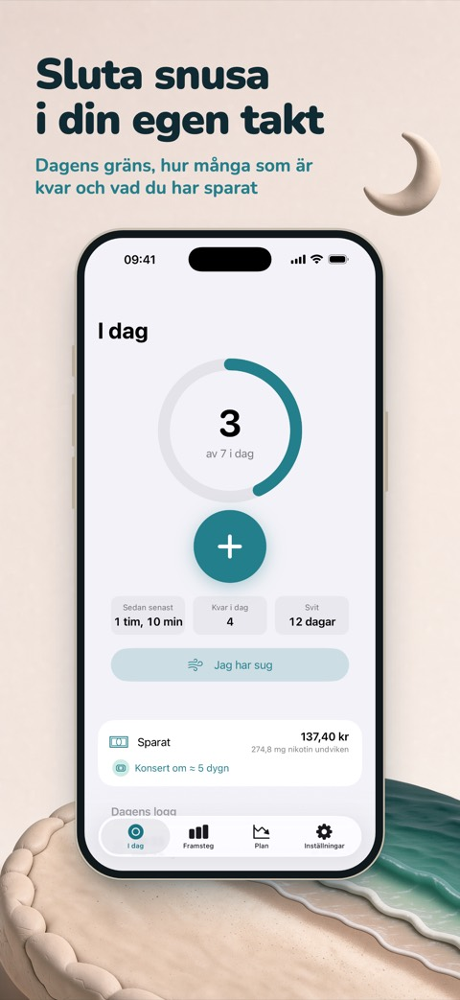
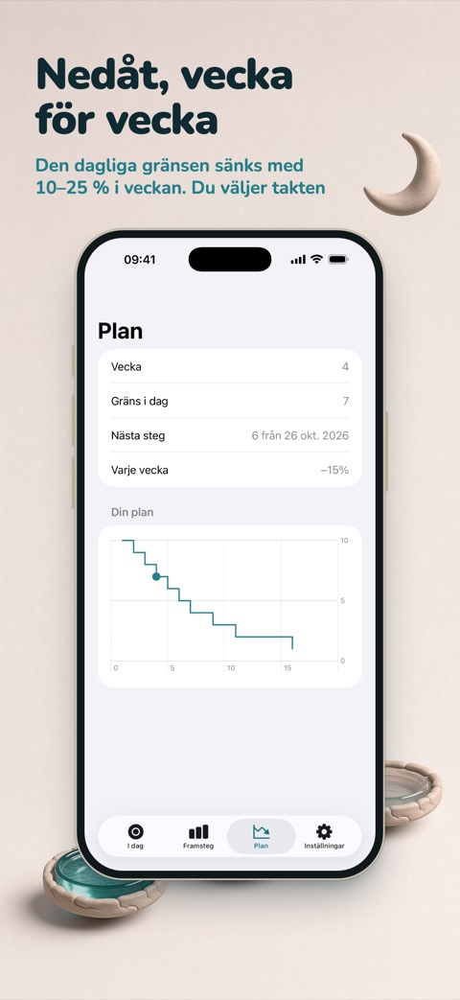
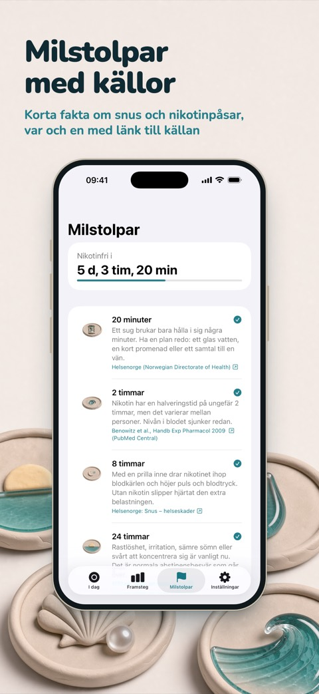

Sluta snusa i din egen takt
Ebb är en iPhone-app för dig som vill dra ner på eller sluta med vitt snus, nikotinpåsar och brunt snus. Logga en prilla med ett tryck, följ en plan som trappar ner vecka för vecka och se hur pengarna du sparar blir något du verkligen vill ha.



Två sätt att sluta
Trappa ned. Berätta hur många prillor du tar i dag. Ebb sätter en daglig gräns som sänks med 10–25 % varje vecka och visar hur många du har kvar i dag. Går du över noteras det, utan straff. Med Ebb Pro kan du även trappa ner styrkan, till exempel 6 → 3 → 0 mg.
Sluta nu. En timer räknar från din senaste prilla. Tolv milstolpar, från 20 minuter till ett år, förklarar vad som händer, var och en med länk till källan. Läs sluta snusa dag för dag.
Logga på en sekund
Logga en prilla från widgeten på hemskärmen eller låsskärmen, från knappen i Kontrollcenter (iOS 18 och senare), via Siri eller, med Ebb Pro, från din Apple Watch. När suget kommer trycker du på "Jag har sug" för en andningsövning på 3 minuter, noterar vad som utlöste det och räknar varje sug du klarar.
Pengar du ser
Ebb räknar det du inte längre lägger på snus och gör det till drömmar: en konsert, nya hörlurar, en resa. Ange ett pris så visar Ebb hur snart dina besparingar räcker i din takt. Ebb bara räknar, appen rör aldrig dina pengar.
Fakta, inte skräckhistorier
Varje milstolpe kommer från en offentlig hälsotjänst, ett universitet eller en vetenskaplig översikt och handlar om snus och vitt snus, inte cigaretter. Ebb lovar inte att lungorna blir renare eller att smaken kommer tillbaka, för det är resultat om rökning.
Privat från början
Inget konto och ingen reklam. Dina loggar stannar på din iPhone, och med Ebb Pro synkas de via din egen iCloud. Anonym användningsstatistik hjälper oss att förbättra appen och kan stängas av i Inställningar.
Gratis, och Pro om du vill ha mer
Gratis: obegränsad loggning, båda lägena, sparade pengar, upp till tre drömmar, alla milstolpar, den lilla widgeten, widgetar på låsskärmen, Kontrollcenter, Siri och andningsövningen. Ebb Pro lägger till hela historiken och insikter, egna planer, Apple Watch, alla widgetar, iCloud-synk med mera. Pro finns som årsabonnemang eller som engångsköp; priser och villkor visas i App Store.
Ebb är för vuxna över 18 år. Appen är ingen medicinsk app och ger inga medicinska råd.